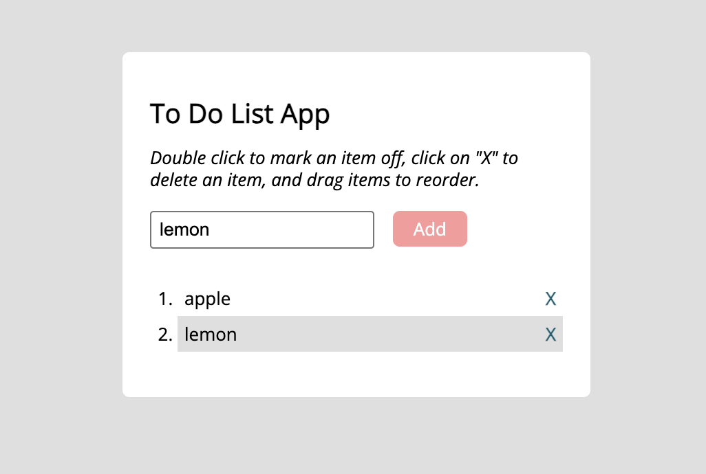

Project Description
A simple To Do List web application that enables users to organize their tasks by adding, deleting,
marking as completed, and reordering them through drag-and-drop functionality.
Links
Live Version:
To Do List App
GitHub Repository:
To Do List App GitHub Repository
Technologies Used
- HTML: Structure of the app
- CSS: Styling and layout for the application
- JavaScript: For managing task functionality
- jQuery & jQuery UI: Used for interactivity, including drag-and-drop reordering
Key Features
- Task Management: Users can add new tasks, mark tasks as completed, delete tasks, and reorder them
with drag-and-drop
- Double-Click to Complete: Mark a task as completed by double-clicking on it
- Drag-and-Drop: Reorder tasks easily for better organization
Additional Project Materials
- File Structure: Organized for easy navigation, with dist directory for minified
files and src for source files
- Dependencies: Utilizes jQuery and jQuery UI for smooth drag-and-drop functionality
and task interactions
Project Highlights
- Interactive Task Management: Offers users an intuitive way to manage their tasks with simple
interactions like clicking, double-clicking, and dragging
- Customization: Easily update the styling in src/styles.css and task functionality in src/scripts.js
- Minified Production Files: Optimized files are included in the dist directory to improve loading
times
Setup Instructions
- Prerequisites: You’ll need a web browser and a local server (such as Live Server in
VSCode).
- Installation:
- Clone the repository and navigate to the project directory.
- Open
index.html in your browser or use a local server to run the app.
Screenshot
